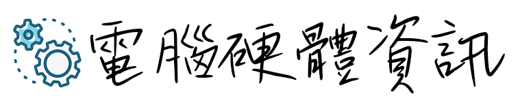

•「滑鼠介紹」：滑鼠是一種很常見及常用的電腦輸入裝置，它可以對目前螢幕上的游標進行定位，並透過按鍵和滾輪裝置對游標所經過位置的螢幕元素進行操作。滑鼠的鼻祖於1968年出現。美國科學家道格拉斯·恩格爾巴特（Douglas Englebart）在加利福尼亞製作了第一隻滑鼠。
•光學滑鼠（亦稱「光電滑鼠」）通過發光二極體和光電二極體來檢測滑鼠對於一個表面的相對運動，它不像機械滑鼠一樣通過滑鼠球的旋轉驅動兩個互相垂直的軸的轉動來獲得滑鼠移動的位置。 最早的光學滑鼠需要使用預先印製的滑鼠墊表面上才能檢測到滑鼠的運動，而現在的光學滑鼠如果在透明的表面上工作，就不能檢測到滑鼠的運動，如玻璃鏡面。雷射二極體可以使之達到更好的解析度和精度。使用電池供電的無線光學滑鼠通過間歇性閃爍光學元件以節省電力，只有檢測到運動時，發光二極體才會穩定地亮起。
（補充：現代常用品牌有，RAZER雷蛇
Logitech羅技 Msi微星 ASUS華碩 等）
•「螢幕介紹」：顯示器（英語：display device），一種輸出裝置（Output device），用於顯示影像及色彩。
常見的顯示器是電腦和電視的螢幕。
最早的顯示器是1922年的陰極射線管（CRT）
Apple I首次為電腦帶來顯示器的概念，而不僅僅是一台充滿訊號燈的大盒子。
現在已經發展為液晶顯示器等。
•「曲面螢幕介紹」：5吋螢幕升級至18:9的6吋螢幕，解析度由QHD升級至QHD+，並加入了DCI-P3廣色域以及HDR10標準，提供用戶更多彩的螢幕體驗。原本的2.5D曲面螢幕也改為全平面方便用戶使用。 從U11的IP67提升至IP65/IP68等級，IP6X代表完全防塵，IPX5代表低壓水柱衝擊機體3分鐘不會造成進水。
（補充：現代常用品牌有，ASUS華碩
ViewSonic/SAMSUNG三星/LG/acre
MSI微星 等）
•「鍵盤介紹」：鍵盤是指經過系統安排操作一台機器或裝置的一組鍵，主要的功能是輸入資料。電腦鍵盤是電腦的外設之一，由打字機鍵盤發展而來。通過鍵盤可以輸入字元，也可以控制電腦的執行。依照鍵盤上的按鍵數，可分為101鍵和104鍵兩種，而104個按鍵的鍵盤又稱為Windows 95鍵盤。
最早的鍵盤可能是出現在17世紀初，那時的歐洲就有人發明格式不太成熟的打字機，鍵盤就是應用在這些打字機上的。在1868年，被稱作「打字機之父」的美國人克里斯托夫·拉森·肖爾斯
•青軸：段落感最強、Click聲音最大，機械感最強，是機械鍵盤的代表軸，需下壓2.4mm才可觸發，打字節奏感十足，但是聲音較大，比較吵 , 壓力克數為60g。有人將其比喻為Cherry的春天，爽快清脆的段落感如春天般舒暢
•黑軸：段落感最不明顯，聲音最小，與青軸形成鮮明對比，直上直下，下壓1.5mm即可觸發。有人將其比喻為Cherry的夏天，無論你想得到急速或舒緩的輸入，黑軸都能自如應對，打字遊戲都適合，但是由於觸發鍵程短，壓力克數較大，所以在遊戲中有上佳的表現。黑軸機械鍵盤單個軸使用壽命長達5000萬次(其他為2000萬次)。
•茶軸：比起青軸，段落感要弱很多，而對比黑軸，又不是直上直下的感覺，2mm即可觸發，屬於比較奢侈的機械軸。茶軸是幾種軸中成本最高的軸，為兩段式無聲，也有人反應與薄膜手感相近，同時，茶軸是所需下壓力道最小的一個，因此較適合想要省力的朋友使用。有人將其比喻為Cherry的秋天，結合了青軸與黑軸的特點，很容易被大眾所接受，茶軸的顏色與秋天的收穫的色彩更為接近。
•紅軸：與黑軸相似。但壓力克數比黑軸小，起35，終60(黑軸起點為40)，是08年出的新軸，手感比較輕盈，敲擊時沒有段落感，直上直下，觸發鍵程也同為2.0mm，敲擊時更加輕鬆，能很好兼顧遊戲和打字的使用需求。
•黑軸：一般情況下適合玩遊戲，打字（指力太弱則不推薦）青軸：大多數人認為是最適合打字的軸茶軸： 茶軸兼顧打字和遊戲需求，所以有被稱作萬用軸。紅軸：價格比較貴的一種軸，遊戲，除青軸外最適合長時間打字白軸：現在用的已經不多，它比較適合大量進行文字輸入
（常用品牌有：Logitech羅技
Microsoft微軟鍵盤/RAZER雷蛇/MSI微星 等）
（電競鍵盤品牌：CORSAIR海盜船
Thermaltake曜越/AULA狼蛛/HyperX）